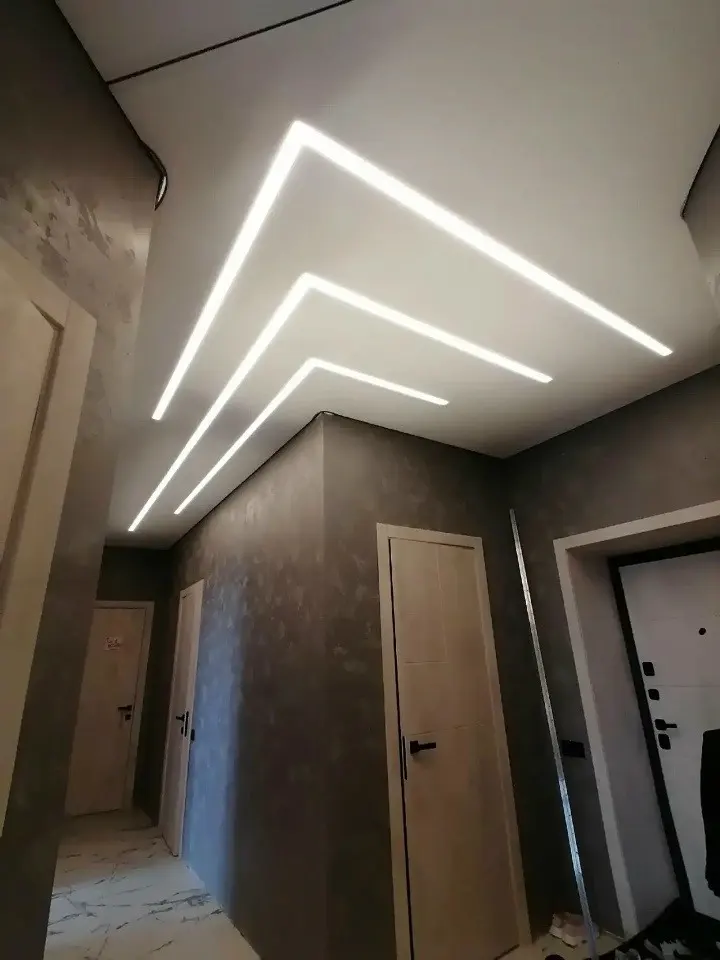
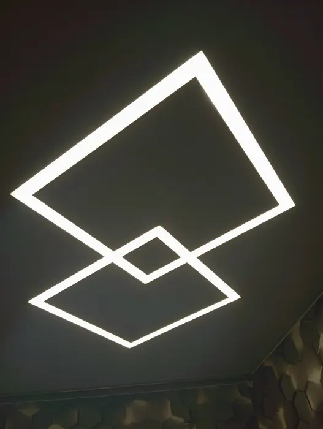
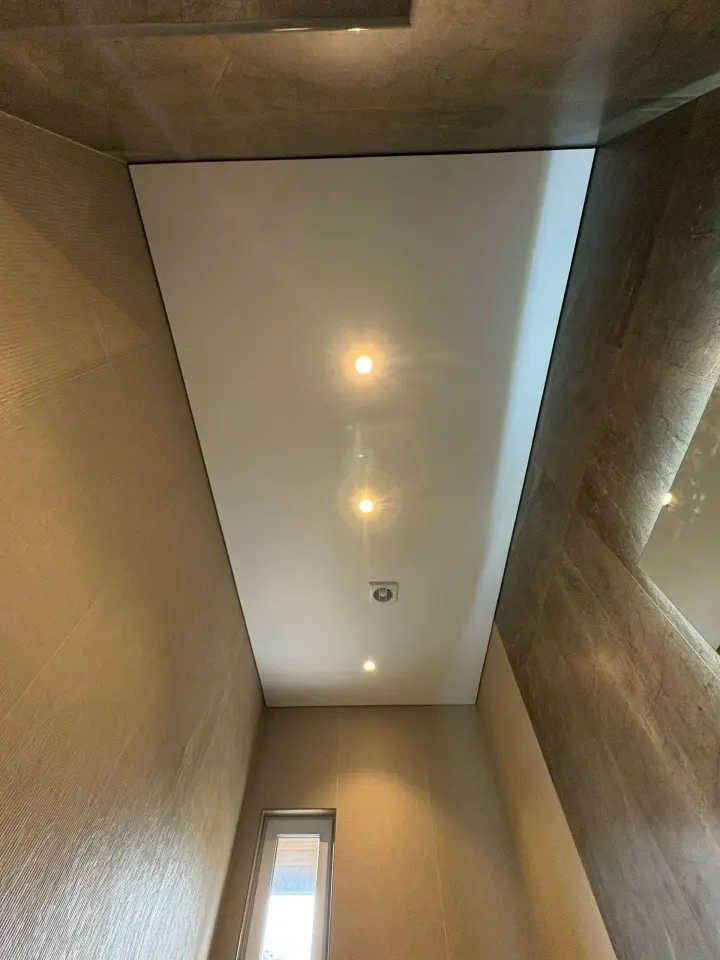
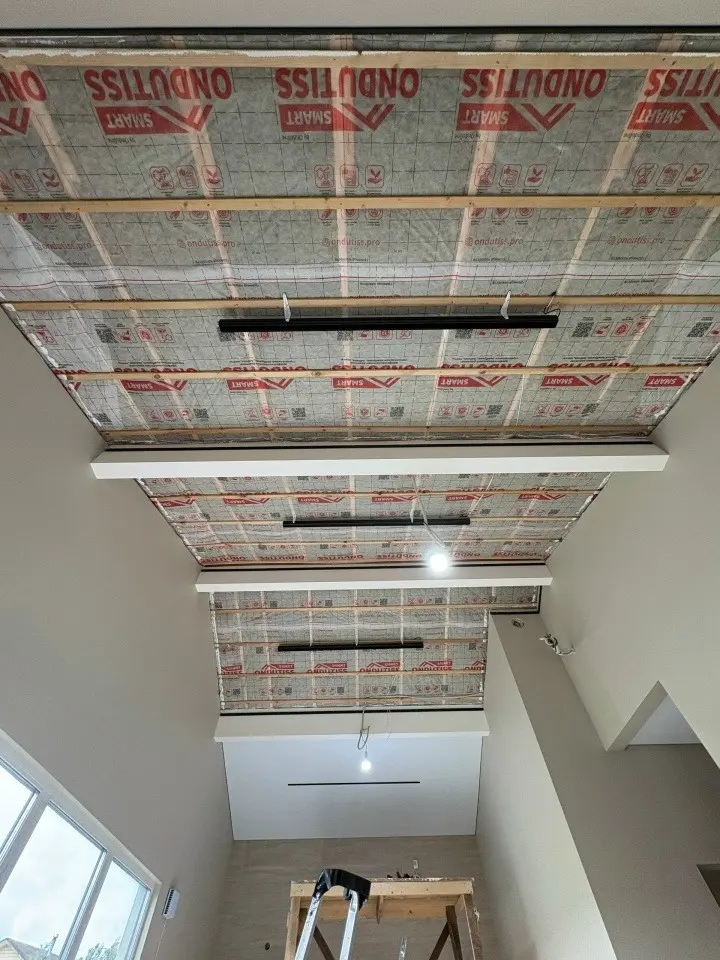
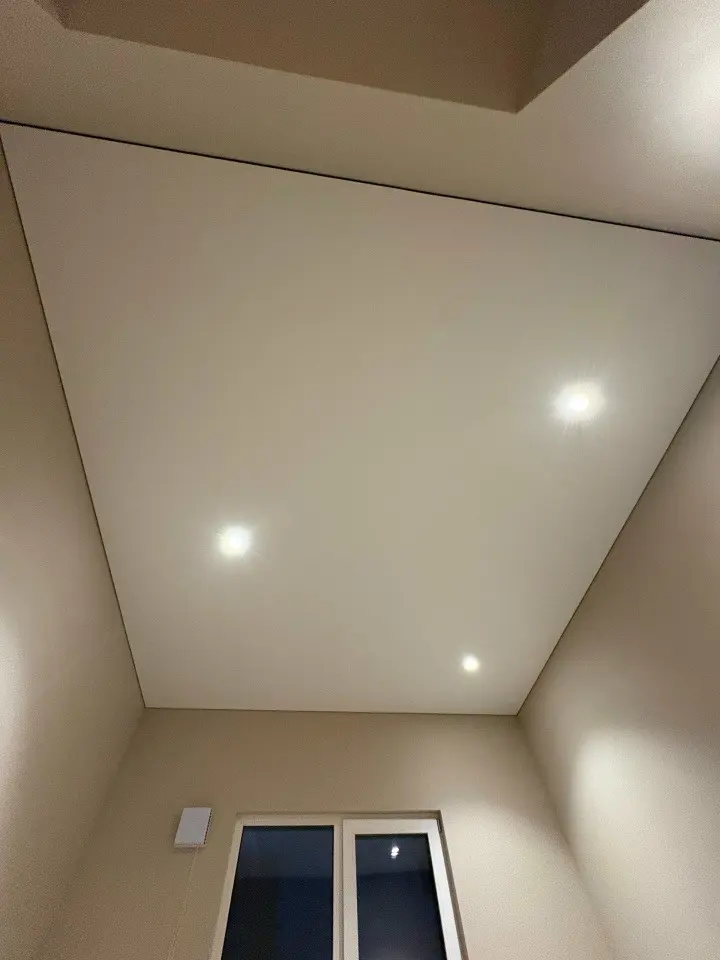
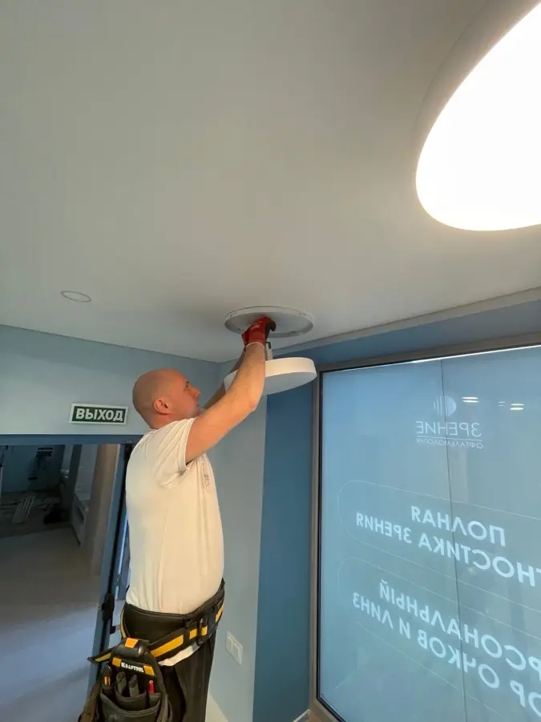
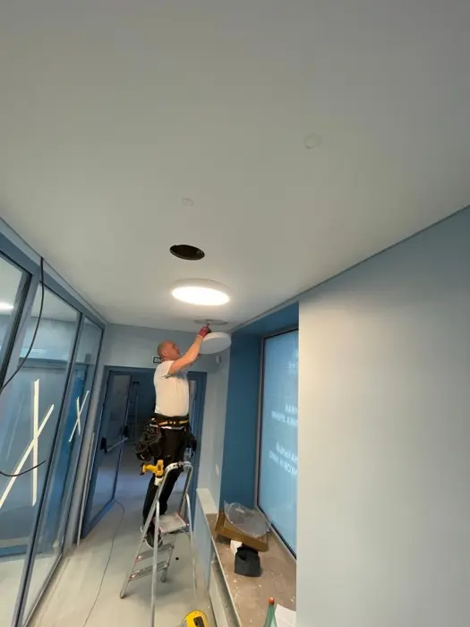
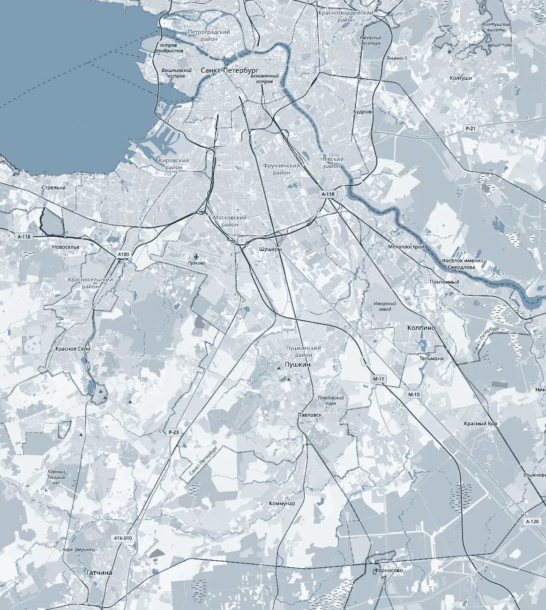

Санкт-Петербург и область: Пушкин, Колпино, Славянка, Шушары, Павловск, Гатчина
Натяжные потолки с продуманным светом
Теневой профиль, световые линии, парящая подсветка и скрытые карнизы. Мастер приезжает на замер с образцами в день обращения, называет цену, и она не меняется до конца работы.
- ★ 5,0в отзывах VK
- с 2016монтируем потолки
- 10 летгарантия на полотно
- 2-3 часана одну комнату


Смета не меняетсяУглы, трубы и люстры считаем на замере, доплат на месте нет
Чистый монтажРаботаем со строительным пылесосом, мусор уносим с собой
Комната за 2-3 часаВся квартира за один день, большие объекты за два
Безопасно и без запахаКомпозитные газовые баллоны, сертифицированные полотна
Что делаем
От простого белого матового потолка до сложного света в загородном доме. Нажмите на карточку, чтобы посмотреть фото и подробности.
Подберите свет для своей комнаты
Включайте профили и светильники и смотрите, как меняется комната. Выбранный вариант можно отправить мастеру, он посчитает его на замере.
Матовое полотно, обычный профиль



Объект месяца, сентябрь 2026
Гостиная со вторым светом: потолок на высоте 6 метров
Загородный дом, гостиная объединена с кухней. На такой площади и высоте любая погрешность видна как на ладони, поэтому от стандартного багета отказались.
- Профиль «Бизон» по всему периметру. Сверхпрочный, держит огромное полотно при сильном натяжении и не деформируется.
- Углы строго под 45°. Запил на специальном оборудовании, без заглушек и небрежных стыков.
- Только магнитные треки. На шестиметровой высоте люстры и споты бесполезны, поэтому встроили треки Maytoni со светильниками Lumistar.
Наши работы
Объекты 2025-2026 годов из нашей группы VK. Снимаем снизу вверх, как вы увидите потолок у себя дома.


Алексей и Ольга
Алексей сам приезжает на замер и сам монтирует, без наёмных бригад, поэтому отвечает за каждый угол. Ольга принимает заявки, ведёт заказы и группу.
Потолки делаем с 2016 года. Полотна берём с собственного производства в Петербурге, поэтому цены без переплат за посредников. На замер Алексей привозит каталоги, которые можно потрогать, образцы светильников и фото готовых объектов, помогает расставить свет и сразу называет точную сумму.
«Выражаю огромную благодарность мастеру Алексею и его супруге Ольге. Потолки смонтированы согласно всем моим хотелкам: скрытый карниз, теневой профиль в санузлах, потолочный рукоход в детской».Константин, отзыв на Авито
- MSD
- Pongs
- Descor
- Clipso
- EuroKRAAB
- Flexy
- Fenix
- Maytoni
Как проходит заказ
От заявки до готового потолка обычно проходит пара дней. Были случаи, когда от замера до монтажа прошли сутки.
- Заявка
Позвоните, напишите в WhatsApp, MAX или VK, или оставьте заявку на сайте. Перезвоним и договоримся о времени.
- Замер в день обращения
Бесплатно, по СПб и области. Мастер замерит комнаты, покажет образцы полотен и светильников и посчитает смету.
- Договор
Фиксируем сумму и срок. Гарантия 10 лет на полотно и 2 года на монтаж, все чеки и акты.
- Монтаж и уборка
Комната за 2-3 часа, квартира за день. Укрываем мебель, работаем с пылесосом, уносим мусор.
Скидки и подарки
- −10%при заключении договора в день замера
- 3-я комнатаполотно в подарок при заказе в две комнаты
- Светильникив подарок, если делаем потолки во всей квартире
- −10%на следующий потолок при повторном обращении
- Скидкипенсионерам, военным, новосёлам и многодетным семьям
- 0%рассрочка без переплаты
Действующие условия мастер подтвердит на замере.
Карнизы и ниши для штор
| Карниз к потолку на закладной | от 400 ₽/м |
| Простая ниша для штор | от 500 ₽/пог. м |
| Ниша с перегибом полотна вверх | 1 000-1 500 ₽/м |
Что влияет на цену потолка
- Площадь, число углов и обходов труб
- Фактура: матовое, сатиновое, тканевое полотно
- Профиль: обычный, теневой, парящий
- Свет: люстры, споты, линии, треки
- Высота потолка, этаж и наличие лифта
Алексей мастер своего дела! Проконсультировал сразу, предложил варианты под разный бюджет, сделал всё быстро, без суеты. Всё необходимое привёз сам, после себя убрал так, что ни пылинки, ни соринки. Цена равна качеству.
Никто не хотел браться за маленький объём, 5 кв. м после затопления. Алексей взялся. За один день всё сделано, мусор убран в мешки, пропылесошено, чисто и красиво.
Алексей выполнил все работы быстро и аккуратно. От замера до установки потолков прошли сутки! Обратимся к вам снова.
Натянул потолки на кухне и в ванной, всё качественно, быстро и аккуратно. Буду дальше пользоваться его услугами.
Алексей сделал всё в обговорённые сроки, без задержек, быстро и качественно. Если ищете мастера, однозначно рекомендую!
Всё быстро и чётко, как и договаривались. Рекомендую и обязательно обращусь ещё!
Алексей, спасибо за проделанную работу! Качественно, аккуратно, очень понравилось. Рекомендую.
Говорила же, что обращусь ещё раз. Работа выполнена идеально, мастер своего дела.
Частые вопросы
Не нашли ответ? Спросите мастера в WhatsApp или VK.
Цена на замере точно не вырастет?
Да. Углы, обходы труб, установку люстр и профиль считаем сразу. Сумму, которую мастер назвал на замере, вписываем в договор, и она не меняется ни на рубль.
Сколько длится монтаж и будет ли пыль?
Стандартная комната занимает 2-3 часа, квартира один день. Сверлим со строительным пылесосом, мебель укрываем, мусор уносим.
Не будет ли запаха от полотна?
Работаем только с сертифицированными полотнами MSD, Pongs, G-line, Descor, Clipso. Они не пахнут, не желтеют и не провисают.
Что будет, если затопят соседи?
Полотно удержит воду. Не прокалывайте его и не сливайте воду сами: позвоните нам, мастер аккуратно сольёт воду через отверстие светильника, и потолок вернёт форму.
Нужно ли мыть натяжной потолок?
Почти нет. Пыль на полотне не держится. Если нужно, протрите мягкой влажной тканью без абразивов.
Какой свет выбрать: 3000K или 4000K?
3000K тёплый и уютный, для спален и гостиных. 4000K нейтральный, лучше передаёт цвета, подходит для кухни, гардеробной и ванной. На замере покажем оба варианта.
Куда вы выезжаете?
По всему Петербургу и Ленинградской области. Чаще всего работаем в Пушкине, Колпино, Славянке, Шушарах, Павловске, Ижоре и Гатчине, там замер можно сделать в день обращения.

Славянка Пушкин Колпино Шушары Павловск Гатчина Санкт-Петербург © участники OpenStreetMapГде работаем
Весь Петербург и Ленинградская область. Чаще всего выезжаем на юг города: Пушкин, Колпино, Славянка, Шушары, Павловск, Ижора, Гатчина. Здесь замер в день обращения.
В портфолио есть объекты на проспекте Ветеранов, в Московском и Приморском районах, в Мурино и Всеволожске, в ЖК «Счастье», «Галант» и «Юнион».
Открыть в Яндекс КартахЗапишитесь на бесплатный замер
Оставьте телефон, перезвоним и договоримся о времени. Или свяжитесь удобным способом.
- Телефон для замера+7 911 011-88-48
- WhatsApp+7 911 011-88-48
- MAX, Ольга+7 981 685-87-82
- VKНаписать в сообщения группы
Замер бесплатный, по СПб и Ленинградской области.